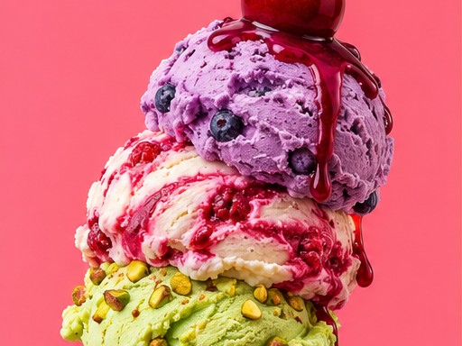
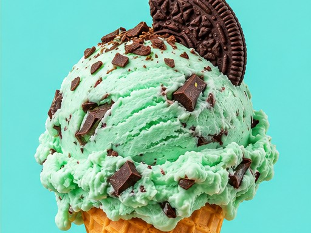

Disco-Kirsche
Sauerkirsche, Heidelbeere & Pistazie
2,40 €Eisdiele & Websecurity-Spiel
Drei Sorten stehen in der Theke. Eine vierte kennt nur das Lager. Entdecken Sie die vierte Sorte, untersuchen Sie das Gästebuch und reparieren Sie beide Stationen. Zum Schluss lösen Sie zu zweit einen Fall an der Eistafel.
In der Auslage
Preis pro Kugel

Sauerkirsche, Heidelbeere & Pistazie
2,40 €
Mango, Limette & ein Hauch Chili
2,30 €
Pfefferminze & dunkler Schoko-Crunch
2,50 €Lakritz, Brombeere & Meersalz
2,70 €Rätsel 1 · SQL-Injection
Ihr Ziel: Finden Sie den Namen der Sorte im Geheimlager.
Mango in die Sortensuche ein und wählen Sie Suchen. Lesen Sie den Treffer.Die Kasse liest KARTE[THEKE] als „zeige die Auslage“. Auf jeder Eiskiste steht entweder THEKE oder LAGER. Ein Plus verbindet zwei Bereiche innerhalb derselben Klammer.
Lassen Sie THEKE im Feld stehen und ergänzen Sie LAGER innerhalb der eckigen Klammern. Der Bon zeigt Ihnen, welches Wort vor der Klammer steht.
Die Kasse durchsucht die drei Sorten in der Theke.
Treffer in der Eiskarte ansehenDie Kasse hat einen Suchwert als Anweisung behandelt und auch das Lager angezeigt. Bei SQL-Injection verändert eine Eingabe die Datenbankabfrage. Parametrisierte Abfragen halten Anweisung und Suchwert getrennt.
Weiter zur Reparatur der SortensucheLösen Sie zuerst „Die vierte Sorte“. Dann können Sie hier den Schutz einschalten und prüfen.
Ihr Ziel: Mango bleibt auffindbar. Der Bon für Theke und Lager darf die Geheimsorte nicht mehr zeigen.
Mango. Wählen Sie erneut Suchen.Sobald beide Tests bestanden sind, erhalten Sie 25 Punkte.
Reparatur geprüft. Beide Tests sind bestanden. Weiter zum Gästebuch
Rätsel 2 · Cross-Site-Scripting
Ihr Ziel: Bringen Sie die Eistafel im Spiel dazu, KIRSCHALARM anzuzeigen.
Die Minze schmeckt frisch. in Ihr Eintrag und wählen Sie Eintrag testen. Vergleichen Sie den Text unter Letzter Eintrag mit dem Text auf der Eistafel.Der alte Tafelstempel hieß [TAFEL]PAUSE[/TAFEL]. Der Text zwischen den Marken bestimmt die Meldung. Den heutigen Alarmnamen finden Sie im Auftrag.
Ersetzen Sie auf dem Notizzettel nur das Wort PAUSE durch den gesuchten Alarmnamen. Übernehmen Sie beide Tafelmarken in Ihren Eintrag.
Der Eintrag hat die Tafel verändert. Bei echtem XSS kann fremder Code im Browser mit den Rechten der Seite laufen. Hier schaltet eine Spielregel die Anzeige um. Für reine Textausgaben in einem gewöhnlichen HTML-Element eignet sich textContent.
Lösen Sie zuerst „Krach an der Eistafel“. Dann können Sie hier den Schutz einschalten und prüfen.
Ihr Ziel: Kommentare bleiben lesbar. Ein Stempel darf die Eistafel nicht mehr ändern.
Die Minze schmeckt frisch. Wählen Sie erneut Eintrag testen.Sobald beide Tests bestanden sind, erhalten Sie 25 Punkte.
Reparatur geprüft. Beide Tests sind bestanden. Weiter zum Schichtwechsel
Partnerfall · Spurensuche
Ihr Ziel: Welcher Gästebucheintrag hat die Meldung auf dem zweiten Tafelbild ausgelöst? Untersuchen Sie die Aufzeichnungen einer früheren Schicht.
Bei drei passenden Angaben erhalten Sie 50 Punkte. An zwei Geräten reicht jede Person denselben Bericht auf ihrem eigenen Gerät ein.
Die Einträge stehen in zeitlicher Reihenfolge. Eckige Tafelmarken kennzeichnen einen Spielstempel.
[TAFEL]KAKAOZEIT[/TAFEL]BEERENPAUSE[TAFEL]BEERENPAUSE[/TAFEL][TAFEL]BEERENPAUSE[/TAFEL]Fall aufgeklärt. Eintrag 3 trug um 14:07 Uhr den passenden Stempel. Um 14:08 Uhr war die Meldung auf der Tafel zu sehen.
Ihr Spielstand
Beginnen Sie mit der Sortensuche.
Ihr Fortschritt wird in diesem Browser gespeichert.